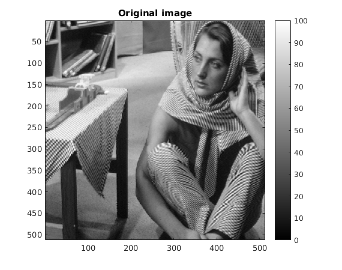
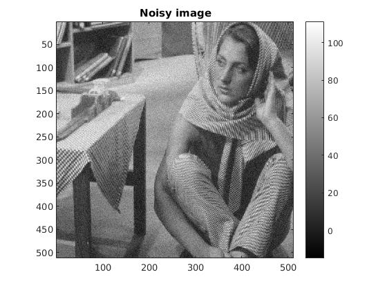

Contents
MyMainScript
sample for my own colormap
myNumOfColors = 256; colorScale = 0:1/(myNumOfColors-1):1; myColorScale = [ colorScale' colorScale' colorScale' ]; % This contains the code that imports the image, % generates the subplots, and computes the bilateral filtered image tic;
Your code here
Load the image and generate noisy version (assume arbitrary number of channels) load the image and the parameters
load('../data/barbara.mat'); frac_intensity = 0.05; spatial_sigma = 1.6; intensity_sigma = 9.7; % generate the noisy image [m n p] = size(imageOrig); imageNoisy = imageOrig; for i=1:p, intensity_range = max(max(imageOrig(:,:,i))) - min(min(imageOrig(:,:,i))); imageNoisy(:,:,i) = imageNoisy(: ,: ,i) + frac_intensity*intensity_range*randn(m, n); end % generate the bilateral filtered fprintf('Please wait. This may take a few seconds...\n'); [imageBilateralFiltered, kernel] = myBilateralFiltering(imageNoisy, spatial_sigma, intensity_sigma); % Printing the image subplot(1,3,1); imagesc(imageOrig); title('Original image'); daspect ([1 1 1]); axis tight; colormap(myColorScale); colorbar; subplot(1,3,2); imagesc(imageNoisy); title('Noisy image'); daspect ([1 1 1]); axis tight; colormap(myColorScale); colorbar; subplot(1,3,3); imagesc(imageBilateralFiltered); title('Filtered image'); daspect ([1 1 1]); axis tight; colormap(myColorScale); colorbar; % Print the kernel after printing the images figure(); imagesc(kernel); title('Kernel'); daspect ([1 1 1]); axis tight; colormap(myColorScale); colorbar; fprintf('The RMSD value for the original and filtered image is %f\n', RMSD(imageOrig, imageBilateralFiltered)); toc;
Please wait. This may take a few seconds... The RMSD value for the original and filtered image is 3.284432 Elapsed time is 3.426622 seconds.
